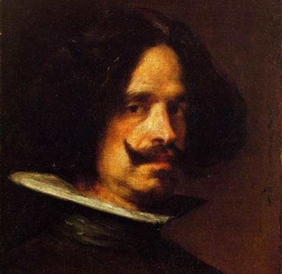

Андрей Рублев
Андрей Рублев – самый знаменитый русский художник-иконописец. Он родился в XV веке и оставил после себя большое наследие в виде икон «Троица», «Благовещение», «Крещение Господне». Андрей Рублев совместно с Даниилом Чёрным украшал фресками множество храмов, а также писал иконы для иконостасов.
К сожалению, многие работы этого автора не сохранились до наших дней. Также туманна и биография Андрея Рублёва. Известно только, что он принял постриг в Троицко-Сергеевском монастыре и некоторое время жил там, а умер весной 1430 года.